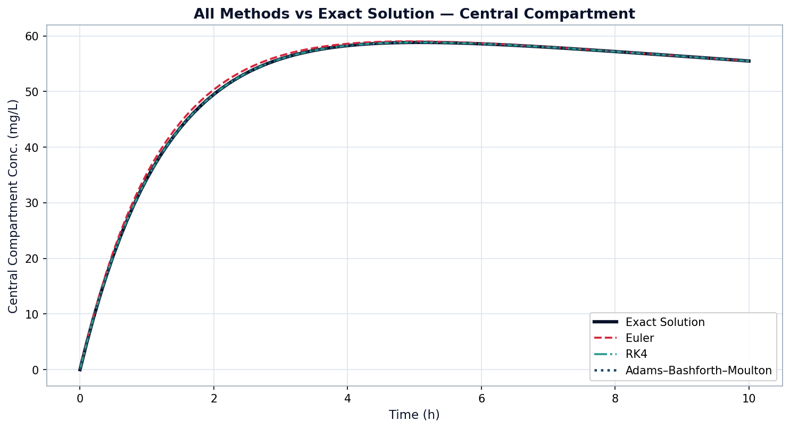

The code explained part by part, the three methods put side by side, how we measured the errors, and a live version of the model you can play with.
The MATLAB script solves the two-compartment model with all three methods over a ten-hour period, taking small steps of $\Delta t = 0.1$ hours, and then checks each result against the exact answer. The script is composed of the following parts:
All the speed values and starting amounts are listed together in one place, so we can change any of them for the sensitivity tests without touching the rest of the code.
We work out the exact answer from the eigenvalues at each point in time. This is the yardstick that every method gets measured against.
A simple loop that steps forward in time, using the slope at the current point to guess the next one.
This takes four smaller slope estimates at each step and blends them together with a weighted average to get a much more accurate result.
We use Runge–Kutta to get the first four points, then this method takes over. It makes a quick guess for the next point and then corrects it.
Finally, we work out how far each method strayed in both compartments and turn everything into the line graphs and bar charts.
Putting every method on the same graph as the exact answer makes the difference easy to see. Euler (the dashed line) drifts off during the fast early part, while Runge–Kutta and Adams–Bashforth–Moulton stay right on top of the exact curve.

For accuracy the order is Runge–Kutta first, then Adams–Bashforth–Moulton, then Euler. But each has a trade-off. Euler is the quickest to run but the least accurate. Runge–Kutta is the most accurate, though it does more work at each step. Adams–Bashforth–Moulton sits in between, but it needs a few starting points before it can begin. For this problem, Runge–Kutta gives the best balance.
At every time step we measured how far each method sat from the exact answer, in both compartments. The averages back up the ranking we saw on the graphs. Runge–Kutta is off by just 1.54% on average, against 7.66% for Adams–Bashforth–Moulton and 28.62% for Euler. Every method gets more accurate as time goes on, closing in on the exact answer once the levels stop changing so quickly.
| Method | Order | Type | Average error |
|---|---|---|---|
| Euler | 1st | Simple one-step | 28.62% |
| Adams–Bashforth–Moulton | 4th | Guess-and-correct, multi-step | 7.66% |
| Runge–Kutta 4 | 4th | Four-slope one-step | 1.54% |
As well as the fixed graphs, we built a live version of the model. The tool below is the same one from the home page. It solves the equations as you watch, so you can drag the sliders and see the two levels respond straight away.